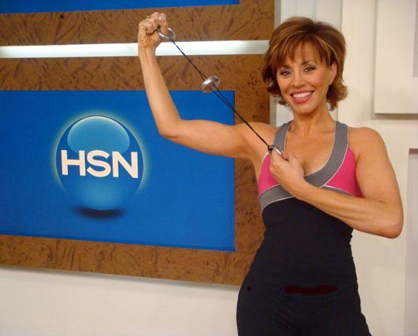
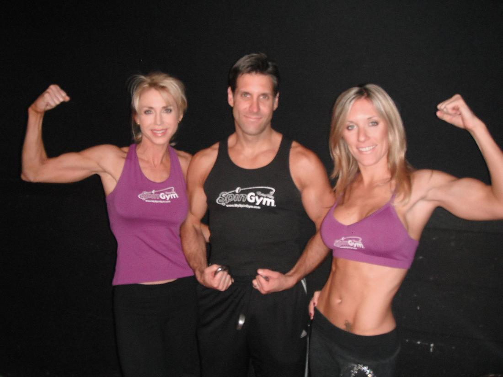
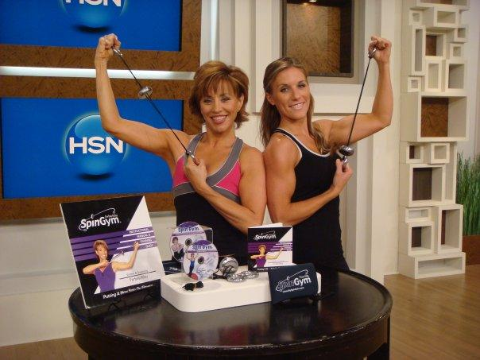
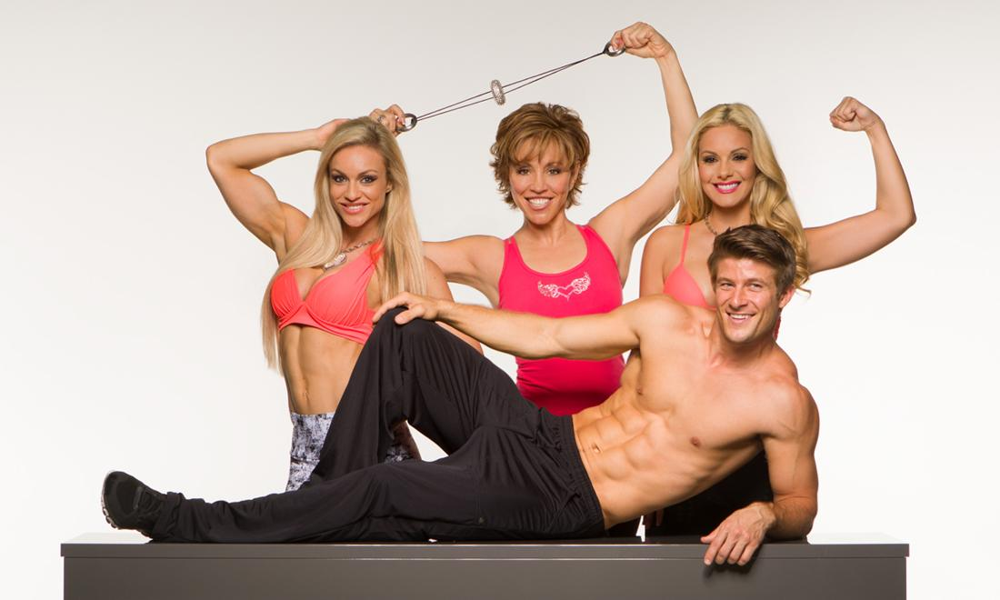
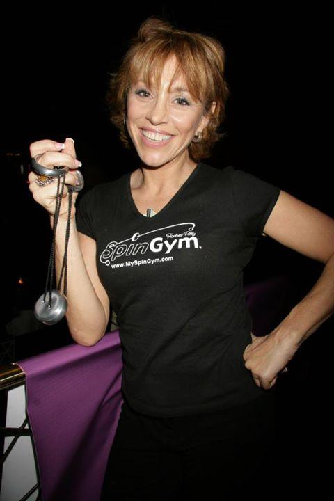
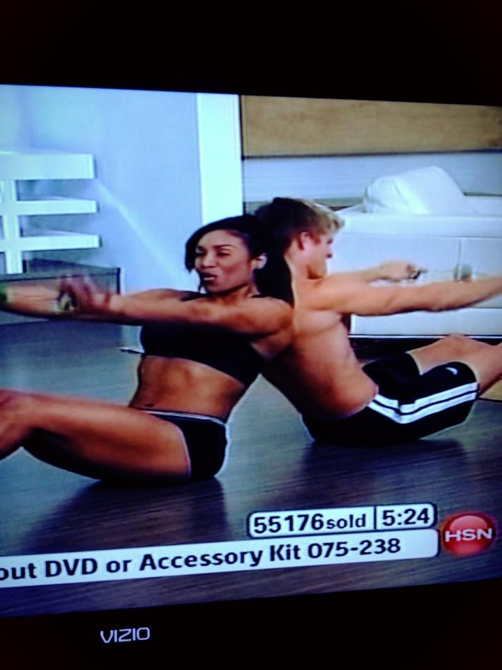
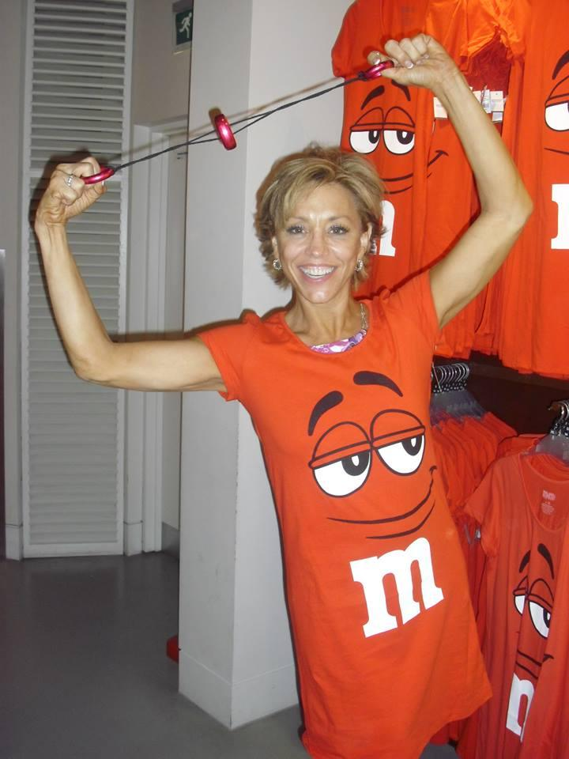

SpinGym airs on HSN

Experience the SpinGym
The most revolutionary new handheld device specially designed to supply constant force during your workout, giving you a total body workout like no other. The inertia-centric forces activates ALL your upper body muscles simultaneously. The ultimate 5 minute fat burning, muscle toning workout ever!



Click HERE!▶ Watch the video on YouTube
“HSN was founded 37 years ago as the first shopping network and is headquartered in St. Petersburg, FL. HSN is a leading interactive multichannel retailer offering a curated assortment of exclusive products and top brand names to its customers. HSN incorporates entertainment, inspiration, personalities and industry experts to provide an entirely unique shopping experience”


HSN show transcript
0:00 coolest thing forms this woman I kept 0:03 another item on my covers how engine has changed people’s lives whether you’re in 0:09 a wheelchair whether you are homebound whether you 0:11 just cannot seem to squeaked squeeze work 0:14 I get other because it’s affordable workout 0:18 to tighten and tone your muscles in your entire upper body is not just about the 0:22 arms 0:23 are have to back you cardio 0:26 here can I tell you this is a right to bear arms this is my all-time 0:30 everything I need to look at if you’ve never seen spin jam don’t miss this 0:34 presentation 0:35 come shipping YouTube under twenty-five dollars in for free he’ll be sick 0:38 what could this possibly do for you Kelly start spinning and see we can 0:41 share with them 0:42 widest tightens and tones your entire arms and you can only do five minutes 0:47 that’s actually the perfect attacks we do you feel it I feel 0:50 Potro by after all yeah and my shoulders 0:54 my back Co it surprisingly difficult 0:57 any I don’t be difficult to do because it’s obviously a limited movement 1:01 some pencils little movement are the most effective well and lower rate with 1:05 higher reps gives you the longer leaner sculpted arms 1:07 so here’s the thing we talk about just five minutes I’ve been all over the 1:10 country Absolom as 500,000 he’s around the country 86,000 here 1:14 and 16 this weekend why are people so excited so many women come to me and say 1:18 I hate this part in my arms I’ve 52 years old 1:21 age to have a few I used to have the Konkan arms and this is my little 1:25 fantasy 1:26 that’s kinda cheesy fantasy by she’s cute girl that 1:29 Demi guess kids think this is everything when you put on a strapless dress 1:33 what I’m wearing I never won this before this is so exciting for me 1:37 and I can get it for you when you go in a sec calendar said I’m feeling it forms 1:41 talking five minutes how is this possible 1:44 watch this doesn’t commit I’m gonna show you something that you have never seen 1:47 before 1:47 Nazi with a dumbbell or big machine or resistance band nothing on the planet 1:52 does 1:52 what’s pinging does because it is spinning it creates an inertia 1:56 through one side of her body and look what has to react to it 2:00 I would put this down for a sec you’re gonna see his chest muscles 2:03 and that would be great if it was just chest but it’s also shoulders 2:06 now ladies watches in a turnaround same exercise 2:10 ladies does this bother you with this where your bra 2:13 that lives look at his shoulders firing gets even better 2:16 this one exercise in the front also does his back 2:20 possible not raise your arms from Dustin 2:24 this is where it gets amazing in the bin the gym big deal at machine it does the 2:28 same thing 2:29 it’s pulling here all the way through here but ladies follow me I don’t think 2:33 you can I can see this right down here 2:35 his lower back is mining good are you kidding me 2:39 how many muscles as he firing every time he does this one 2:42 exercise cam 1,2,3,4,5 bam bam bam bam bam 2:45 then give me a little bit a triceps if you wanna wear sexy sleeveless dress 2:50 or halter top gotta just look at that you gotta go oh my god 2:54 now you’re not gonna get big arms like this it’s not going to happen but you 2:57 can atone 2:57 and tight because everything is firing and I gotta tell you can this is why I’m 3:02 head over heels 3:03 about this product and you are awesome thank you so much for that 3:06 quietly great to see his face was like finally lol 3:10 you’re happy to stop art I no change with spina burn its like you 3:14 aren’t you done if you do use Benjamin Raich you can do more than 3:18 fish to the thermo case a look at this issue sitting there right now going on 3:22 which extension 3:23 by minutes later the front back 3:26 are gonna fire simultaneously Kali this is one of those things you can’t believe 3:31 in you can’t tonight five minutes with this tension 3:34 the back to front the shoulders all the way down the back to the core 3:37 every time you call it its every muscle am you know you shouldn’t wait a second 3:42 the beach is Dustin he’s got a big guy 3:44 so check out this beautiful Brianna using my videos 3:47 three years help make something he’s beautiful arms bustling chest 3:51 okay to go doesn’t look like anything that’s okay it’s all about results was 3:55 when I turn her around 3:56 ladies look what’s going on this 3:59 a lot away in the gym to do that she’s firing everything but 4:03 I’m just so long would you pay twenty-five dollars just to have that 4:06 go away if you got that right here bulging over your bra 4:10 let’s work on that and you should be happy but it gets better 4:13 overhead now watch what happens it look at them just her whole shoulders 4:17 this could be HUGE dumbbells in the gym but it’s not cash 4:21 it’s something that fits in your purse it’s something you carry with you 4:24 doesn’t weigh anything now I’m just a little tricep because they’re not gonna 4:28 believe it’s like 4:28 this is the back tricep she was doing does mister in front and back 4:32 now here’s the beautiful part gets even better how about your sitting at a desk 4:38 this is where it all falls apart from most about us because we 4:41 step on do this Kelly step on the gas pedal once during the day 4:45 expect your car to coast all the way to the end to the day 4:48 not gonna happen you’ll step on the gas pedal will get this even if you work out 4:52 in the gym for an hour 4:53 usually you’d ask your metabolism shuts down polices look at this 4:58 now action to protect I think it’s 5:01 with us a last minute show Press this is not a model 5:04 this is a friend a mother of twins some actual lawyer 5:08 this is a lawyers by when you walk in our office 5:12 will make expansion I this shows up because you want to do a front for me 5:17 can I tell you she’s a moment when she is 909 5:21 kinda just like mine okay I’m sorry if you told me that this was possible I 5:26 would have never believed 5:27 got home I got away shali fires 5:32 everything ladies going south tone 5:36 overhead from you like to see your beautiful back once again 5:39 I’m it’s not just lowered its all these muscles and you can have this 5:44 in your house you know I got testimony as I should’ve I should let you get to 5:47 the end it before we do that I want to show you what you’re sleeping 5:50 because this is a price break on the spin jam we sold 85 5:53 thousand of them here at a higher price than we’ve even included free shipping 5:57 and handling for you 5:59 it on an infomercial for 35 bucks they’re and six hours to ship 6:02 with a free shipping and ten dollars less than the impartial 6:06 save the money get the same product and get those amazing 6:10 results like is busy for a lot of us we can get to the gym 6:13 even if we get to the gym we don’t know what machines to you catchy those 6:16 countries on us 6:17 right here’s the thing I’m gonna show you why they call this dumb 6:20 Bell but not to be off to testimony okay take a listen to when my friends 6:24 about how much they love swingin’ we come back we’ll show you how you never 6:27 need to use this again this is really heavy and I’m 6:29 I breaks my heart when I look at Los 6:33 seniors on 6:37 I compared to them another generation 6:41 younger and 6:44 its because the spin gym this is will how it started 6:49 basically I’m very lazy I didn’t really exercise 6:52 everything was struggle I was too tired many times to go out 6:56 and and I just 7:00 think that this was the greatest gift ever 7:04 it’s been a year and I can tell you the difference 7:07 I can’t tell you how great my arms feel I can’t tell you 7:12 the spin jim has just just given them new life 7:16 you know somebody who’s almost seven years old 7:19 I’m I just feel absolutely great 7:22 I’ve got grandkids I can keep up with them 7:25 I feel great 70 is the new 40 for me 7:29 is the No forty oh my gosh no it doesn’t take long to feel it and I’m gonna burn 7:33 okay so here’s what I did I get Kallis Benjamin I actually do the bicep curl 7:37 how many pounds resist you think you feelin Gilles 7:40 it feels like it’s like 20 I don’t know it feels 7:43 like a lot ice when she talks about you know it’s like me can you text per 7:47 second 7:48 and give you a 10 pound dumbbell do across as well all feels the same goes 7:51 here 7:52 you right erect it’s about 10 pounds you’re feeling 7:55 let me try something with his big experiment here take the dumbbell and 7:58 stick it in my pocket but if you 8:00 know that put in there because I’m trying to get fit on the road right yeah 8:03 okay nah ragged and you product here that’s just what you just did 8:07 was 2.5 Sep curl worth about if you really crying kids twenty pounds 8:12 resistance 8:13 how I know that because we’ve proved it out a what this lil guy 8:16 it’s in my tiny little person comes with the everywhere watch this I wanna show 8:20 you whites Benjamin so 8:22 affected just by the way let’s take a dumbbell throw it away cuz this is just 8:26 heavy 8:27 kinda archaic right art 1400 got 8:30 we’re very busy and into this is the last show and tell the 8:33 end of February are tested so anyone had 8:37 can now free shipping price break I hold on the best s 8:40 scale K started 0 I want to show you what work does because what you really 8:44 can’t see 8:45 is that’s engine works because the discs pins it creates inertia so when I pull 8:50 it 8:51 can you see how it actually twists and spins what happens when you see my chest 8:55 hurts 8:55 higher the energy that this creates is all the way through your arms up here 9:00 30 core and out the other side that’s what we saw duster but all these muscles 9:05 how to fire to keep this guy spinning watch this and to give his hold on 9:09 identity one quick okay 10 poll and you tell me how much resistance and I just 9:13 pull 9:14 25 pounds yeah okay but now you don’t have to do 25 you can do 9:19 for you can do it so easy to do some Tai Chi with S 9:23 but if I want to crank actually put on my shoulder and do best 9:26 I can only do five why because it’s like 20 9:30 resistance and that’s all I need it is surprisingly effective 9:34 I want you Lake and I think somebody’s don’t even do any kind of weight 9:37 training because it on a ball cap 9:38 now you want about you what’s talking with this because it’s lower weight 9:42 higher reps and that’s for you to get cut definition like you said your 9:45 fantasy 9:46 when he called to come I can still get yes it’s really cool have not kept its 9:50 okay 9:51 five minutes a day only do it by the way you can do more than five minutes is 9:54 Kelly pretty much out 9:55 yes now here’s the other thing too I’ve chip hours 9:59 DVD’s these two DVD’s there’s cardio you can see behind me 10:03 there’s arms Abhishek oral taxicabs 10:07 to join home just don’t wait a sec for sure just how it works every muscle in 10:10 your body 10:10 and it does ask if you want me to show you that do you ever 10:14 go check out this video come right back and I’m in a Kallis 10:19 I promise you don’t trust me when I say that okay to go don’t go away 10:22 take a look City hands and I can already feel it 10:26 in my arms my chest I’ll 10:29 when you feel it I can feel a burning in my muscles threatened 10:33 the front the upper half and the bottom actually no 10:36 and I can fill it up in my shoulders adjusters distances incredible 10:40 I can see my muscle flexing in SR right here that kinda 10:44 pets can chirp right there I can only say it enough for happiness on and I can 10:49 see it in the bottom so 10:51 it’s definitely getting the muscles in my arms workout 10:55 I’ve just been using this for five seconds and I can already feel it 10:58 all throughout my arms all but my back 11:01 immediately immediately how media meeting in her office 11:05 immediately wash this is where we live we don’t live in a gym 11:08 now I do have an amazing abs workout for you can combine this with Polat ease and 11:12 yoga 11:13 and you can do the work out on the floor which is amazing tits look at church 11:16 can see under here she’s doing acting but our whole back is fired 11:21 core beautiful but let me ask you a question few hey get on the floor cuz I 11:26 do 11:26 so when I design you can do this in your kitchen chair 11:29 in your living room chair may be on the edges your bet she starts Benjamin Raich 11:33 just like how he’s doing 11:34 and all you do isley back about 40 degrees 11:38 Macklemore what you realize and there’s no back to the chair because you have a 11:42 back 11:42 and you have approx and I wanna freak you out now it’s good when you feel it 11:47 in my house my shoulders you can forget about what you want but you with your 11:51 shoulders because you’re concentrating on the app 11:53 to keep his feet on the floor okay don’t get you can see 11:56 okay I don’t know I want to keep this video we can your whole body 11:59 towards that can hold me back turn up a month in 12:03 she said the 12:08 the by 12:15 incredible you cast what 12:19 if you wanna what just happened get the phone to get a stringent I’ll tell you 12:21 what just happened 12:22 do you see this this cut here what all happened here why this is tight 12:27 why was the mother of twins and have the smallest waist ever had 12:30 because when you put yourself in this position i callee dead 12:33 you twist a little yeah and use pinging what happed yeah I do haha 12:37 the whole bleak section and you felt that but you still again 12:40 still engaging and upper body it is really call 12:43 I can’t see why we have close to 100 thousand 12:47 I me were closing in on a hundred thousand engines this is the guy who 12:51 brought it 12:51 and here they just end it a better price than anywhere in the nation 12:55 by far by far ten dollars less and free shipping here 12:58 so I mean et sixteen dollars back atcha 13:01 stuff you take with you anywhere and everywhere you can travel with it 13:05 he said summit have recall of a routine because a traveler 13:09 life gets in the way my mom’s been sick and I’ve been at the hospital a lot 13:12 lately 13:13 but this is something I bc my fire bed fine as she really taking a wheelchair 13:17 she can be going into just get those motor skills back perhaps 13:21 oh absolutely only so much value too stingy I could go on and on 13:24 savings alone because free shipping want you guys to have it 13:28 almost 200,000 how crazy is that and here’s the thing 13:31 if you got Benjamin home and tuning do me a favor wanna show you how this works 13:35 okay spend it was completely unwound right to start with 13:39 that you can you pull out for a second you’ve ever done it’s not just the 13:41 overhead and stretch for me lean over 13:43 0 oh my gosh you feel beautiful this is on the DVD’s by the way 13:48 scratcher doing because your polling dynamically is a stretch 13:51 all through here so if you see in the office this is a crazy stretching one’s 13:55 funny on television yeah go around for me when you go around your hole or back 13:59 releases 14:00 heart ads now here’s which i think is rage okay 14:03 ever done now and this crazy thing say anti be with Ford Riley 14:07 project shipping container known and by the way this video 14:10 lives on HSN da common how to wind a spin gym 14:13 you know I want use wind up like Yulia pre-wired 14:17 now here’s why what you doing you don’t expect this part suck up your abs and 14:20 squeeze your butt 14:22 if you want sweats tech let it sit for a second 14:26 hole in your app squeeze your butt kept and give it to hug 14:29 and don’t let it set and when you do this 14:32 you have a gnite I everything all oh my gosh 14:35 but you gotta keep it got to the top if you don’t it’s at a little bit 14:39 and then it will stop spinning I want you to pollen 14:43 give me a little wine suck it up tell him 14:46 I clearance because 14:49 I love it you know I just saw one in the bathroom I 14:53 Natasha sitting down i crying its 14:56 here’s my reaction you will find here put you 14:59 I put in this woman’s hands you trust a chance they got when she said 15:03 and all should be yes and the reaction wise 15:06 ok this is crazy I just 15:11 0 I don’t want you you are going to be 15:14 on maze you might be looking at this guy 15:17 don’t wait a second work try it gotta try you can get a money back guarantee 15:20 free shipping 15:21 praise break tryin seriously 15:24 okay so what might you just tuning in the most amazing finish 15:28 on the planet why do I say that because it’s just five minutes now watches just 15:32 stretching and I got his phones receive can stay there 15:35 okay second come you don’t want to watch this could this 15:38 fun one moment look at it firing Dustin’s chest 15:42 Dustin shoulders you won’t believe these muscles but you will stop by what you 15:46 see is underneath 15:47 10 his trials are firing is dealt through here his last 15:51 his rhomboid go to school this fall off at Boston’s 15:55 my bra fat used to live I don’t have it anymore 15:58 would you like to lose you brought back now here’s the best overhead 16:02 we talk in 30 seconds here now check this out to see his shoulders 16:06 by raising and you see all the way the so-called last but this is the part that 16:10 even I didn’t realize been Jim did 16:12 to see his lower back muscle incredible can I get closer because this is the 16:16 part 16:17 you can’t get this with anything else I don’t care what dumbbell machine using 16:20 in the gym 16:21 and it’s simple in the tricep 16:24 I can watch okay Washington DC thanks for holding the line 16:28 you live in the NHS featured 16:32 I just purchased this spend damn month and I 16:35 seen you guys in the wind the wind and I cannot wait i kidded 16:39 here I could do it at work where yeah 16:42 I can’t wait minus a five-star even say wow that grow on television inspired me 16:46 and she’s crazy I love 16:48 I I’ll tell you what do you see 16:51 this issue at work yeah tell me what you do. list you want to tighten tone early 16:55 some way 16:56 all the above perfect I’ll tell you what this is doing you know what you doing 17:00 she city and ask nobody’s there kinda making 100 shotgun a dumbbell 17:04 she’s just toning and tightening and tell me about your arms you up by 17:08 your arms good bad okay 17:12 going to be great now likely cell and this is not a mom Lisa mock 17:16 is the part I really like bookmarklet you look at ago 17:20 is easy my darling thank you so much for picking up the phone and taking a chance 17:24 you’re gonna love this i really do want to hear from you okay 17:28 thank you care so nice talk to you thank you have a great 17:31 me you know i’d you said it right you to pay a 17:34 he said it right then it can work said your arms again great 17:38 yes it’s tough area but this and it’s not just our 17:41 it back if you’re just tuning in the spin Jim is the answer 17:45 thank you so much and here’s what’s great too is very hard to convince guys 17:49 to do this because they’re so big and buff anything you can’t do anything 17:52 so I don’t even try if you watch me tonight I don’t need to convince you 17:55 because you can see it 17:57 it’s definitely working on Dustin and I know he uses this 18:00 I don’t have to pretend but not a lot for us ladies this is why I created 18:04 I’m tire I’m tired running into someone you going I’m not taking off my jacket 18:08 in my sweater cuz I’m embarrassed 18:10 ourself competent seems really live in arms if you had something this 18:14 easy that fit in your purse you carried with you 18:18 everywhere you go it did something terrible like 18:21 actually just gave you beautiful arms is that worth I’m sorry twenty-five dollars 18:26 here’s the thing just what you don’t count if I could give up 18:30 that’s why because I think having you this strong in this section is working 18:35 out 18:35 and by the way text you I’m tryer when you’re sitting on your dog trainer 18:40 it’s very hard to use on hard when you’re sitting sit on your trainer 18:44 just be paddling and spinach I really talk about multitasking 18:48 twice the work out happy time and by the way its final asking a charity because 18:52 we here at HM 18:53 Love Actually don’t here’s the thing I’m gonna give you 18:56 you can wear spin jam around your neck I can she wants a beautiful bling 19:01 you are so cute hey you know it’s always there at the ready 19:04 we are extremely busy being a thousand people online 19:07 on top of the three thousand that is spoken for this point 19:11 and you can well imagine in it I know you look at the pic its haha could be 19:15 that effective 19:16 sometimes big things come in small packages this is gonna give you 19:19 the sculpted the mean taking and tone muscles 19:23 in again very hard to target areas the whole upper body is engaged your back 19:27 every muscle in your arm every little muscle really create the cuts that you 19:32 want action the jerk by RFI looking through magazines 19:35 you can do this you can order sweetest engine with free shipping tonight 19:39 if you can imagine being able to target your back in your house 19:43 with just minutes a day I mean all these muscle find go overhead 19:46 me Brianna and just show everything the fires every time you Pau 19:51 that’s why I’m in love with this product because otherwise with the doc now it’s 19:54 one muscle here 19:55 one muscle there one machine here this is everything firing at once even her 20:00 arm here 20:01 has to engage her back and everything you do with a spin gym to keep it 20:04 spinning 20:05 have to engage your core gotta pull up and when you pull up in poland 20:09 and if you do what Kelly did on the chair how about that 20:12 again when’s the last time you looked in the mirror and saw hourglass shape 20:16 because you didn’t think it was possible 20:18 at a what protestant you live and we comes with 8 workouts 20:22 it does work out and a little travel pouch by the way I never 3033 20:26 960 30 3396 unit minor one 20:30 gambling analysts it’s awesome it’s often here we go 20:33 so much I love being with you think Justin 20:36 thanks for your call stay online again 30 3396 20:40 spin jam and don’t forget your hsn dot com with all kinds of new arrivals for 20:45 you there 20:45 and when you see new arrivals you know it all is about innovation speaking 20:49 which got Bon Apetit 20:50 watching tonight heat up look at our today special sometimes you can see them 20:54 ahead of time 20:55 yeah imaget.



Get YOUR SpinGym NOW!
1 comment from the original site
Forever · July 20, 2016
Surngisiprly well-written and informative for a free online article.